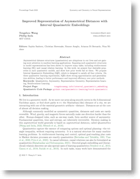

Improved Representation of Asymmetrical Distances with Interval Quasimetric Embeddings
Workshop on Symmetry and Geometry in Neural Representations at NeurIPS 2022
PMLR Proceedings
Abstract
Asymmetrical distance structures (quasimetrics) are ubiquitous in our lives and are gaining more attention in machine learning applications. Imposing such quasimetric structures in model representations has been shown to improve many tasks, including reinforcement learning (RL) and causal relation learning. In this work, we present four desirable properties in such quasimetric models, and show how prior works fail at them. We propose Interval Quasimetric Embedding (IQE), which is designed to satisfy all four criteria. On three quasimetric learning experiments, IQEs show strong approximation and generalization abilities, leading to better performance and improved efficiency over prior methods.
Quasimetric Learning: What and Why?

Among all unconstrained bivariate functions , a special subset is the quasimetrics, which represent distances that can be asymmetrical. This includes many functions of research and practical interests, which does not generally belong to the widely studied metric function space. Analogous to Metric Learning, Quasimetric Learning is the task of learning a quasimetric from data. Quasimetric Learning is already an important part of many research works, including graph learning, causual relation learning, and reinforcement learning.

Many recent works [1,2,3] propose quasimetric learning methods. In this work, we discuss several desirable properties of the quasimetric parameterization, and propose Interval Quasimetric Embedding (IQE), which greatly outperform previous state of the art with a much simpler form.
[1] Tongzhou Wang and Phillip Isola. On the Learning and Learnability of Quasimetrics. In
International Conference on Learning Representations (ICLR), 2022
[2] Silviu Pitis, Harris Chan, Kiarash Jamali, and Jimmy Ba. An Inductive Bias For Distances:
Neural Nets That Respect the Triangle Inequality. In
International Conference on Learning Representations (ICLR), 2020.
[3] Bo Liu, Yihao Feng, Qiang Liu, and Peter Stone. Metric Residual Networks for Sample
Efficient Goal-Conditioned Reinforcement Learning. arXiv preprint arXiv:2208.08133, 2022.
What makes a good quasimetric model?
(1) Obey Quasimetric Constraints (at least approximately). Enforce the correct geometric and inductive biases.
(2) Universally approximate all possible quasimetrics. Expressive enough for any quasimetric structure in data.
Currently, only latent quasimetric models satisfy both (1) and (2): $$d(x, y) = \underbrace{d_\mathsf{latent}}_{\llap{\textsf{quasim}}\rlap{\textsf{etric over latent space (possibly parametrized)}}}(\overbrace{f}^{\llap{\textsf{gene}}\rlap{\textsf{ric encoder (e.g., a deep neural network)}}}(x), \overbrace{f}(y))$$ Indeed, prior works [1,2,3] and our paper show that such methods greatly outperform alternatives in modeling quasimetrics.
What makes a good latent quasimetric model?
(3) $d_\mathsf{latent}$ should have few parameters. So latents are informative of the quasimetric structure, e.g., in transfer learning.
(4) $d_\mathsf{latent}(u, v)$ should be "smooth" in latents $(u,v)$. No diminishing/discountinuous gradients. Have (approximate) latent positive homogeneity:
$$\forall \textsf{latent } u, v, \quad \forall \alpha > 0, \quad d_\mathsf{latent}(\alpha \cdot u, \alpha \cdot v) = \alpha \cdot d(u, v)\qquad$$
Before our proposed IQE, no method satisfies all four properties.
Interval Quasimetric Embeddings (IQEs)
IQE is derived via an extension to PQEs [1]. Instead of using complex Poisson processes, it uses simple unions of intervals. Given input latents, IQE divides the latent dimensions into groups, where a union of intervals is computed for each group. Lengths of the resulting unions are aggregated together to form the IQE quasimetric:
Experiments
Modeling a Large-Scale Social Graph ($\textsf{Berkely-Stanfard Web}, |V|=685{,}230, |E| = 7{,}600{,}595$)
Modeling Distinct Random Graphs ($|V|=300$)
IQE consistently performs the best, often outperforming models with much more heavily parametrized $d_\mathsf{latent}$ heads.
See the paper for results on offline Q-learning.
|  |
PaperWorkshop on Symmetry and Geometry in Neural Representations at Conference on Neural Information Processing Systems (NeurIPS) 2022. OpenReview. CitationTongzhou Wang, Phillip Isola. "Improved Representation of Asymmetrical Distances with Interval Quasimetric Embeddings" Workshop on Symmetry and Geometry in Neural Representations at Conference on Neural Information Processing Systems (NeurIPS). 2022. Code: [PyTorch Package of SOTA Quasimetric Learning Methods] |
bibtex entry
@inproceedings{wang2022iqe,
title={Improved Representation of Asymmetrical Distances with Interval Quasimetric Embeddings},
author={Wang, Tongzhou and Isola, Phillip},
note={Workshop on Symmetry and Geometry in Neural Representations at Conference on Neural Information Processing Systems (NeurIPS) 2022},
booktitle={Proceedings of Machine Learning Research (PMLR)},
volume={Volume on Symmetry and Geometry in Neural Representations},
year={2022},
}